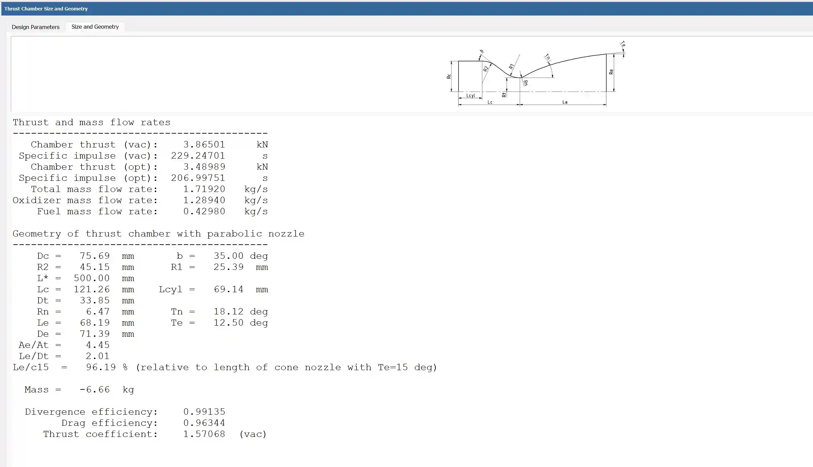
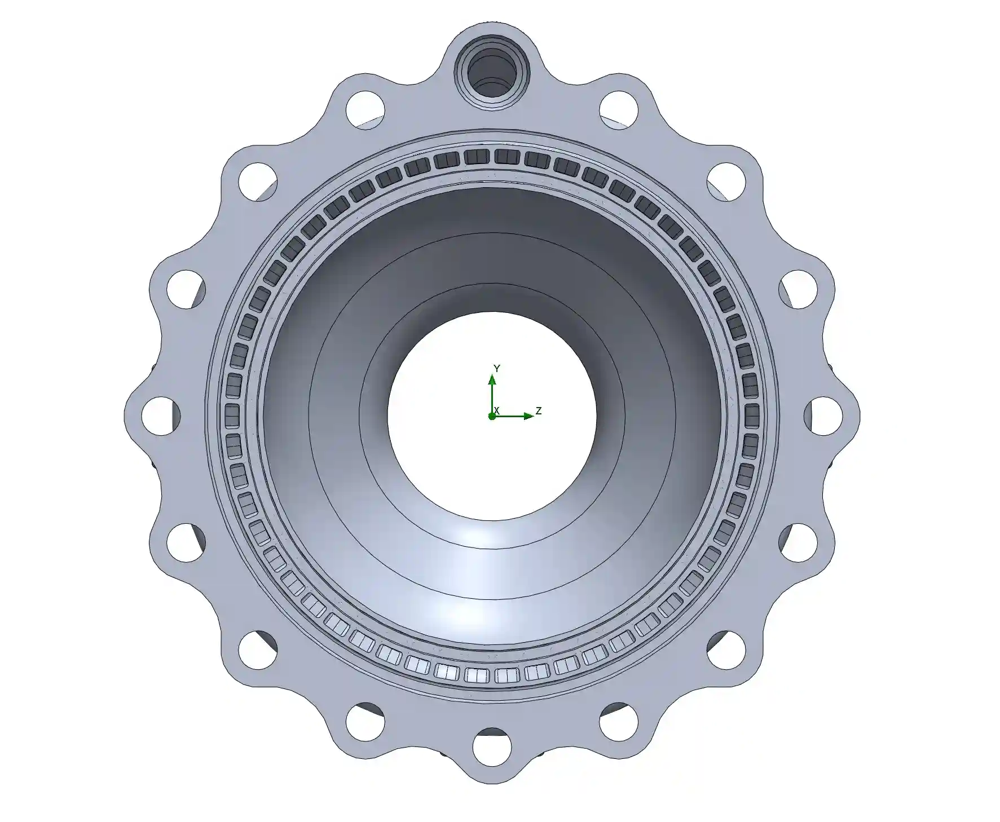
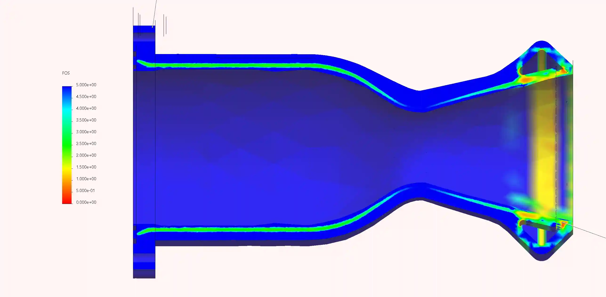
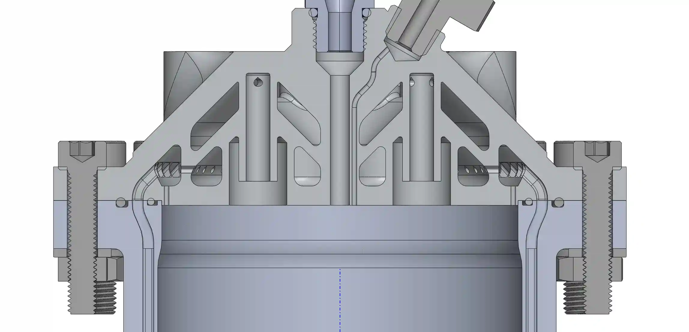
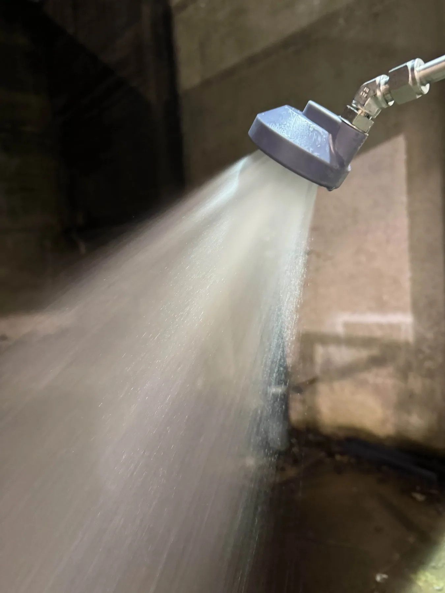
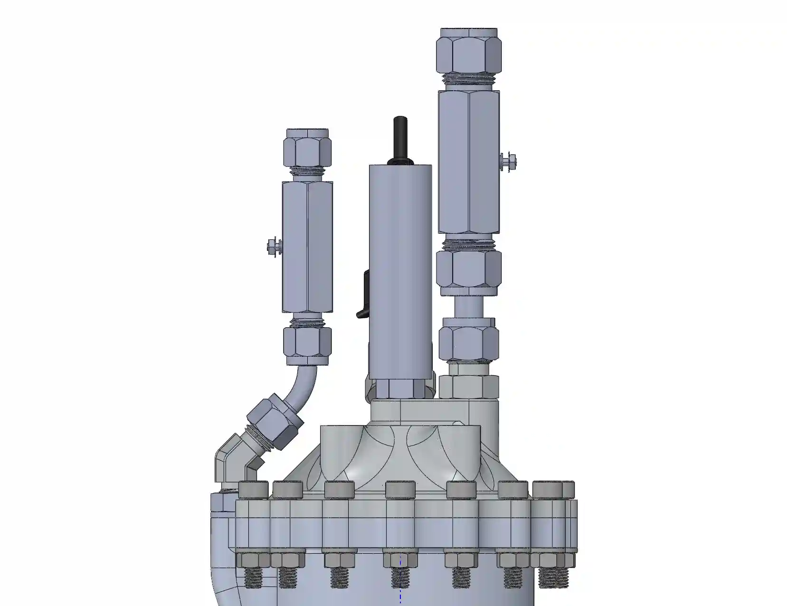
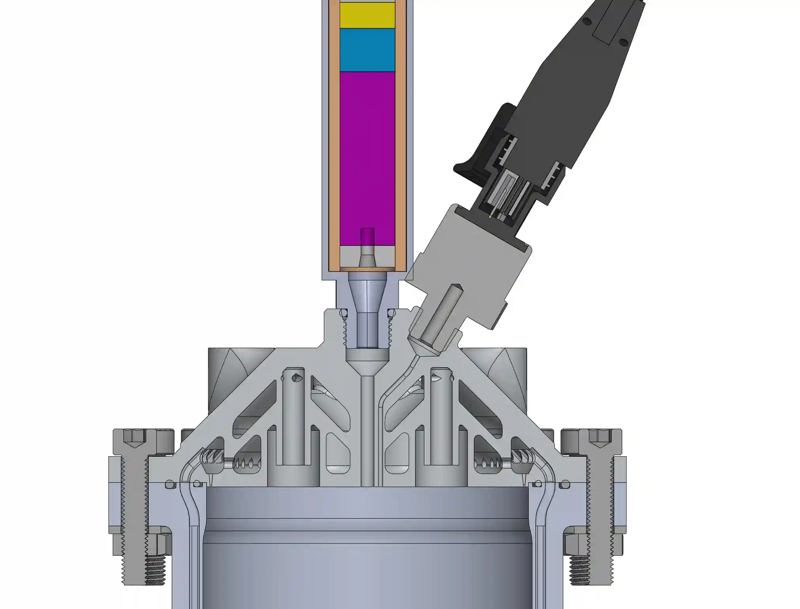

"Goblet" is an ethanol/nitrous oxide fueled rocket engine that I'm in the process of designing right now. It's meant to be the first regeneratively cooled flight engine in Canada. To achieve this goal, special focus must be taken towards achieving the required performance characteristics for flight. Details in this article will be a little more brief, as this project is still under very active development. The name comes from how it looks like a cup with the TVC mount points - hence, "Goblet of Fire".
Design Criteria
Unlike previous engines I've designed, Goblet has to meet extremely strict requirements to be compatible with a flight vehicle of any kind.
- Weight: Minimized. Previous engines range from 25kg to 10kg. Goblet must be an order of magnitude lighter, at around 1-2kg.
- Performance: 3.5kN of thrust has to be obtained in a 3 inch diameter combustion chamber to meet liftoff TWR.
- Reliablilty: Despite being lighter and higher thrust than any engine I've ever worked on, it must be capable of multiple firings without damage of any kind.


To design the initial contour of the combustion chamber, Rocket Propulsion Analysis was used, in addition to hand calculations and NASA's CEARUN chemical analysis program.
Chamber Design
The chamber is designed with DMLS manufacturing in mind, and will be printed in AlSi10Mg, specifically to fit into a 5" fincan.


It utlizes a similar sealing implementation to UFE.


Downcomer iterations:


The exciting part is that the chamber has been printed! There are also plans to plasma coat the inner liner and injector face in zirconium oxide as a thermal barrier coating.


Chamber Simulation Validation
Dozens of CFD iterations were performed, consistently improving the design of the chamber over time.
Flow simulations were done to optimize pressure drop and even out flow velocities, as well as to confirm expected flowrates.


FEA simulations based on CFD were done to ensure structural stability of the chamber.


CFD and thermal combination sims were done to ensure temperatures were underneath the safe threshold. The steady state inner liner temperature is around 300C, which is well below the melting point of AlSi10Mg.


Injector Design
The injector is designed as a six-element gas-centered coaxial swirl with film cooling. Special attention was paid to minimizing mass and maximizing printablilty.
Specific manifolds are designed to distribute pressure evenly and minimize vortices.


The first version of CFD was finally completed after four months of simulation, to produce the correct pressure drop, two-phase flow, and mixing characteristics in combination with the chamber. This was also my first time using p-adaptive meshing, which was super cool. Over 80 iterations were designed and tested, making this the most intense simulation driven design I have ever worked on.


The injector was then printed in Tough 2k resin and coldflowed at 110 PSI to match flowrates with CFD and observe atomization qualities. It would have been best to perform this with C02, but it wasn't practical due to the restrictions of a personal project.


An injector of this architecture was hotfired in January of 2026, and produced around a 55% c* efficiency. As a result, I decided to pivot towards a more proven architecture for this first engine to avoid delaying the vehicle further. Trade studies and past performance showed that the paired like-doublet architecture would be most reliable with the techologies available to me. I reembarked on the design, CFD, and FEA journey for another few months.


This injector has now also been printed.


Plumbing and Sensors
Everything directly above the engine was also designed.
Servo driven Hylok valves are used for the main fuel and oxidizer valves.


A C6 motor will light the engine through the injector face. A pressure transducer hasa direct access to the chamber for measurement.


CAD Assembly
Here's a few cool shots of the thrust assembly CAD.